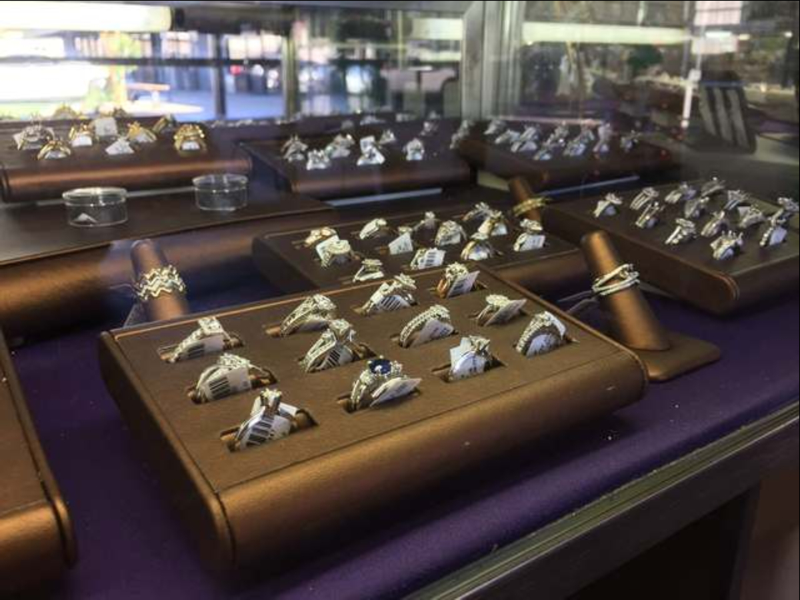

Searching For Somebody Who Is:
- Knowledgeable and pursuant in learning: best programming practices, effective practical algorithms, hands-on data structure(s) application, and scalability.
- Enthusiastic about trying new languages and frameworks.
- Competent in using the Unix/Linux command line.
- Experienced in programming/development with C++, Python, Java, etc.
- Comfortable in an object-oriented programming environment.
- Adept at collaborating with programmers, developers, and other professionals to achieve a common objective.
- A natural problem solver with strong analytical and interpersonal skills.
- A Self motivated, positive individual, with a strong work ethic.
- A college graduate who studied law and computer science.
- A skillful communicator with high respect for the power of efficient team collaboration.
If so, please don't hesitate to contact me directly, I've linked my resume below, and I'm happy to travel, grab coffee, discuss programming, collaborate on open source projects, and discuss over the phone or in person what value I may be able to bring to your project, or team.
SQLConnect

A C# console application utilizing a local database to store and manage diamond inventory in a jewelry store.
C# SQL
Java Projects
RecursiveBinarySearch, Basic Computer, Simple Encrypt/Decrypt, testScoresAverage, ArrayManipulation, JavaFXSkateShop
Java
Algorithms & Data Structures

𝗣𝗿𝗼𝗷𝟭: A C++ program using a Dynamic Array to read in a list of numbers from file "nums.txt".
𝗣𝗿𝗼𝗷𝟮: A C++ program that Dynamically allocates gasoline pump('GasPump') class objects, maintaining a running total of the amount of fuel dispensed, and revenues collected. Driver Program simulates fuel demand for a number of vehicles.
𝗣𝗿𝗼𝗷𝟯: A C++ program exploring a practical experience with characteristics, and implementation details of inheritance and polymorphism. -Parent Class : 'ship' -Inherited Class 1: 'CargoShip' -Inherited Class 2: 'CruiseShip'.
𝗣𝗿𝗼𝗷𝟰: A C++ program to simulate a simple card game between two players. A standard 52 card deck is implimented by the card class, and used to play out turns by the player class, and print the games turns/intermediate outcomes, and results.
𝗣𝗿𝗼𝗷𝟱: A C++ program that, given a starting point, finds its way out of a maze, using recursive calls, and backtracking. Not by looking ahead.
𝗣𝗿𝗼𝗷𝟲: A C++ program that reads input from a file "𝗶𝗻𝗽𝘂𝘁.𝘁𝘅𝘁", and builds a binary search tree from the input data. Each of the words of the data set are stored among the tree, and are able to be queried for both: (𝟭)number of occurances of a particular word, and (𝟮)words that mmeet or exceed a specifies threshold of occurances within the input file. 𝗣𝗿𝗼𝗷𝟳: A C++ program using a Priority_Queue Class implimented as a binary heap which recieves two parameters:
1) The type of the element stored in the heap.
2) A comparator class type.
𝗣𝗿𝗼𝗷𝟴: A C++ program that invokes the use of Dijkstra's Algorithm['DijkstraPaths()'], with the starting vertex read from the file.
C++